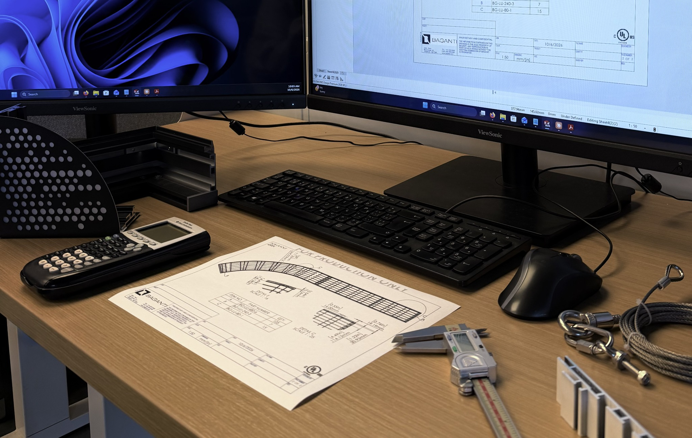
RESEARCH + DEVELOPMENT
We evaluate materials, components, prototypes and manufacturing methods before production.
Baganti coordinates design, engineering, fabrication, printing and lighting tests through one team.
The team reviews the design and technical requirements throughout development and production.
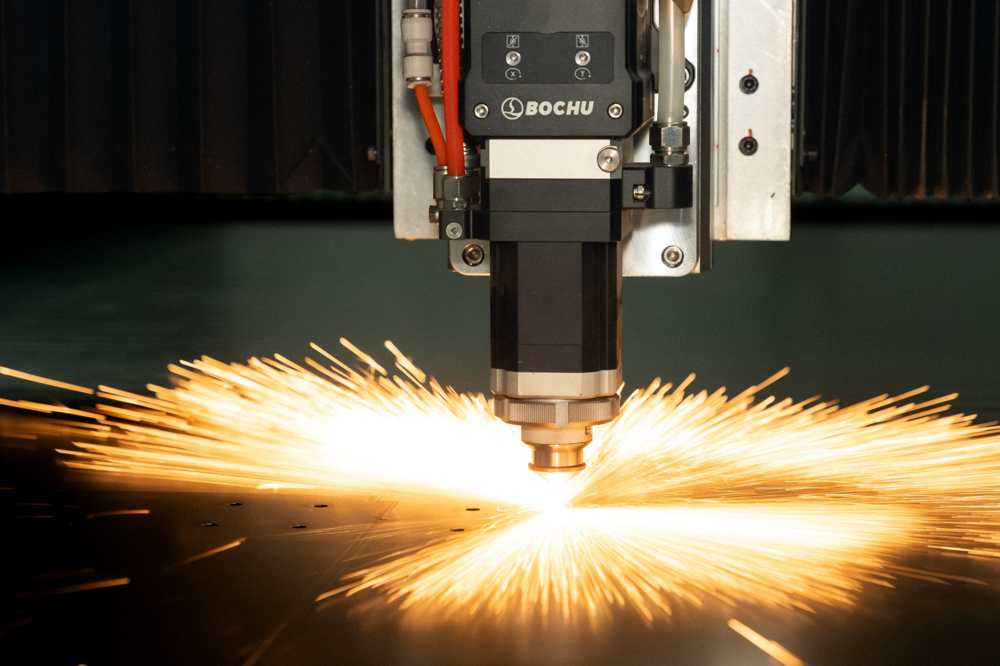
Design, engineering and testing are coordinated to confirm the structure, light output and visual result before production.

We evaluate materials, components, prototypes and manufacturing methods before production.
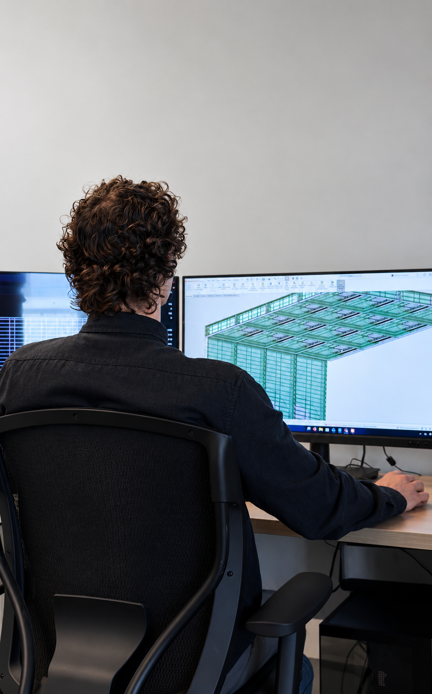
We develop the product’s structure, mounting, graphics, lighting and fabrication details together.
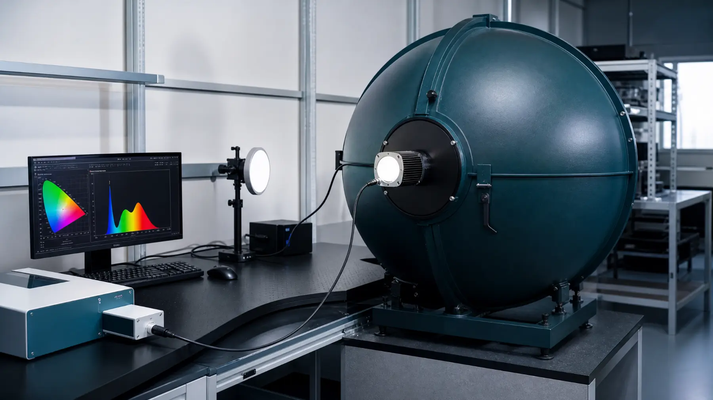
In-house tests measure light output in lumens, colour temperature (CCT), colour rendering (CRI) and colour coordinates (chromaticity).
Our in-house equipment cuts, forms, machines, joins and finishes metal components.
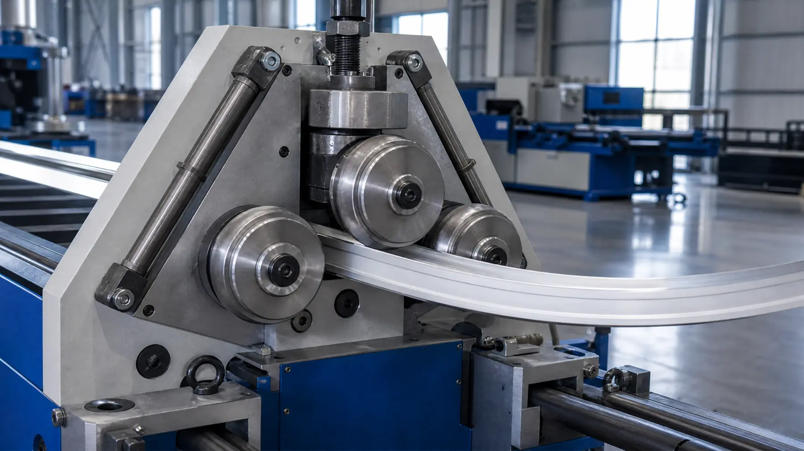
Bends aluminum profiles and metal components into curved forms.
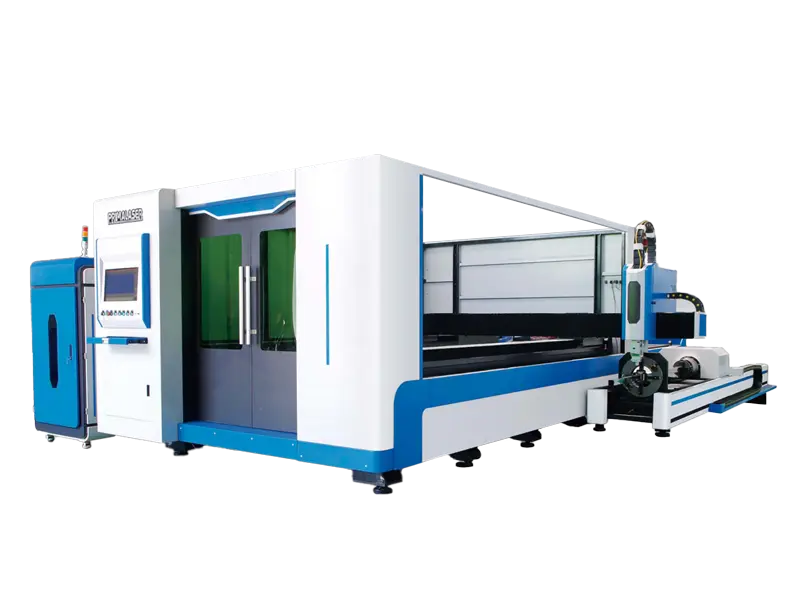
Punches holes and openings in metal components for repeatable assembly.
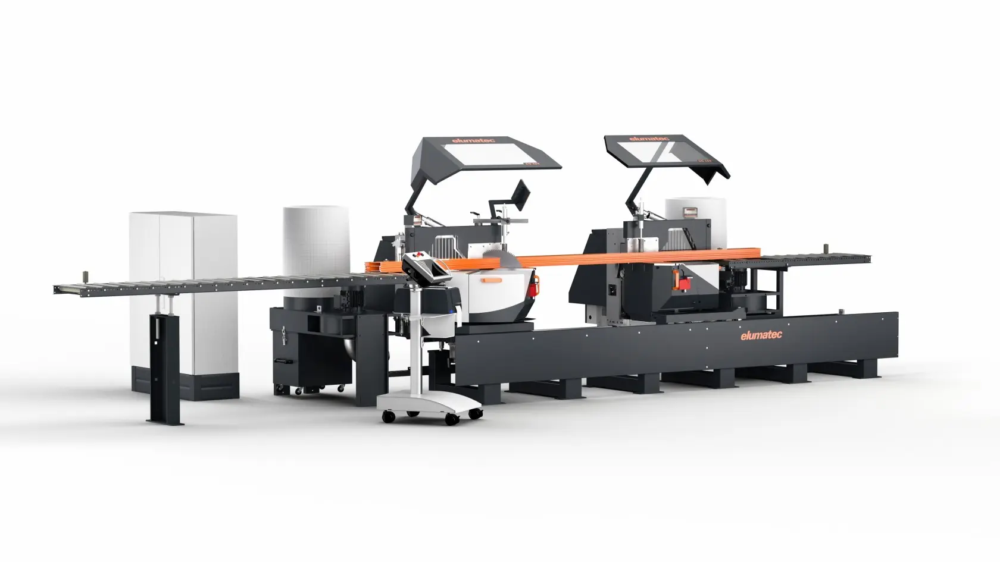
Cuts aluminum profiles at the angles required for frame assembly.
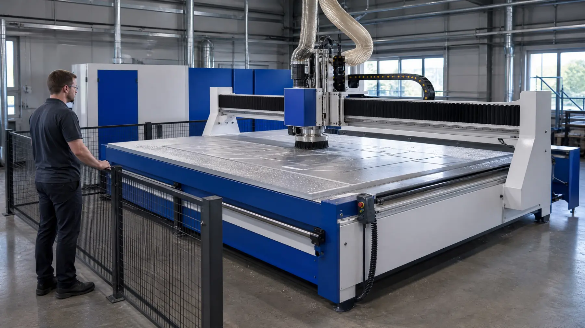
Computer-controlled routing cuts and machines parts for custom and repeat production.
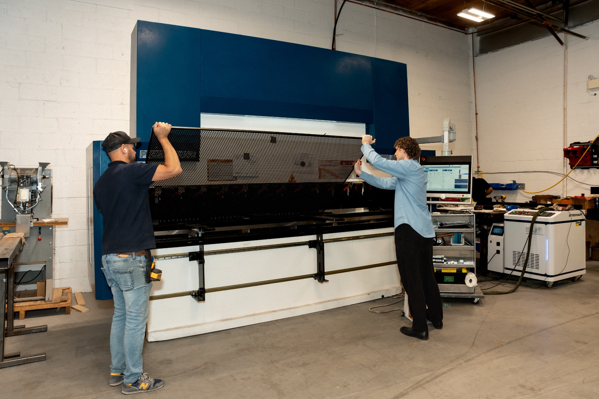
Bends sheet metal for brackets, enclosures and structural components.
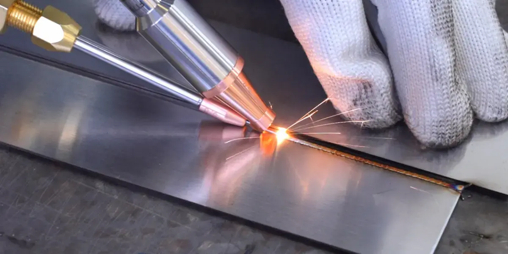
Joins metal parts and makes soldered electrical connections for assembled systems.
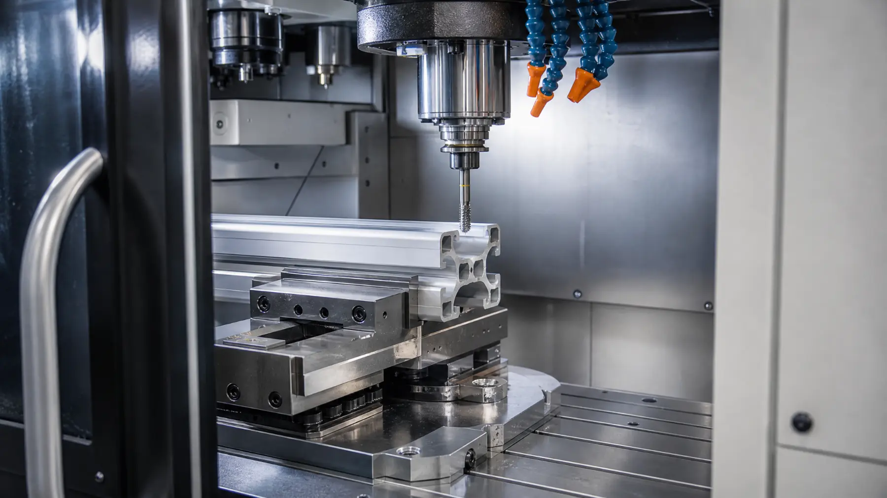
Creates screw threads in components for fasteners and assembly.
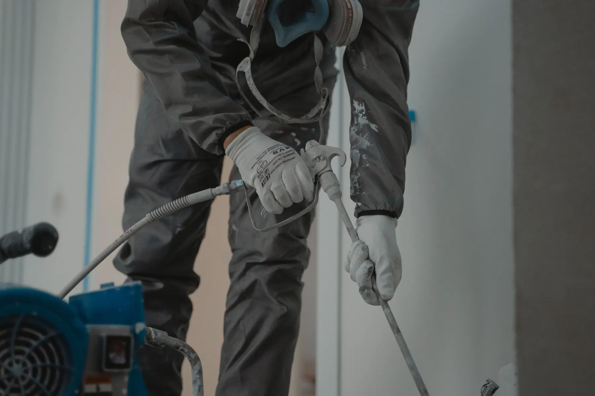
Applies a powder-coated finish to metal parts in standard and custom colours.
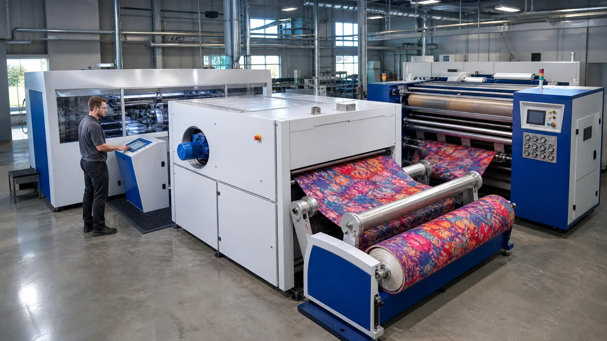
Prints fabric graphics in-house for illuminated and non-lit displays.
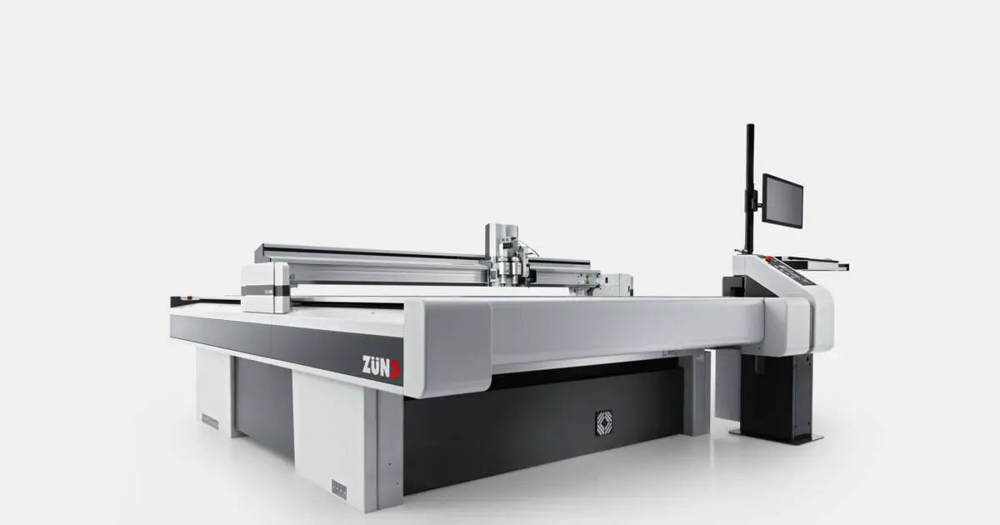
Computer-controlled cutting for textiles, films and flexible sheet materials.
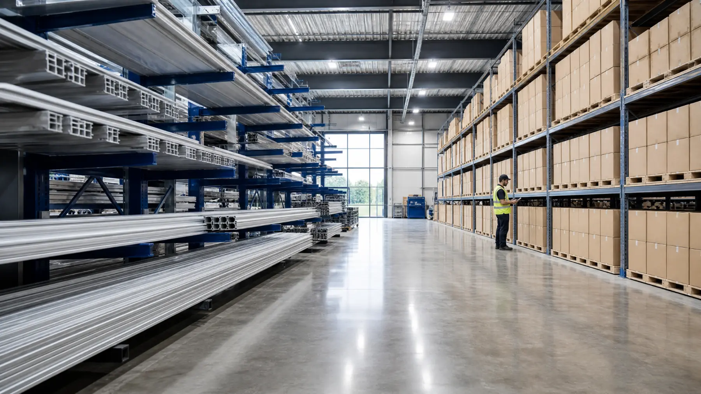
We stock frequently used components to support assembly and production planning. Availability and lead times are confirmed for each order.
Share your drawings, requirements or initial idea. We’ll review the engineering, testing and manufacturing work required.